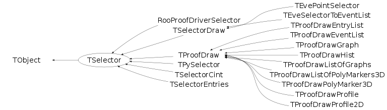

class TSelector: public TObject
A TSelector object is used by the TTree::Draw, TTree::Scan, TTree::Process to navigate in a TTree and make selections. It contains the following main methods: void TSelector::Init(TTree *t). Called every time a new TTree is attached. void TSelector::SlaveBegin(). Create e.g. histograms in this method. This method is called (with or without PROOF) before looping on the entries in the Tree. When using PROOF, this method is called on each worker node. void TSelector::Begin(). Mostly for backward compatibility; use SlaveBegin() instead. Both methods are called before looping on the entries in the Tree. When using PROOF, Begin() is called on the client only. Bool_t TSelector::Notify(). This method is called at the first entry of a new file in a chain. Bool_t TSelector::Process(Long64_t entry). This method is called to process an entry. It is the user's responsability to read the corresponding entry in memory (may be just a partial read). Once the entry is in memory one can apply a selection and if the entry is selected histograms can be filled. Processing stops when this function returns kFALSE. This function combines the next two functions in one, avoiding to have to maintain state in the class to communicate between these two functions. See WARNING below about entry. This method is used by PROOF. Bool_t TSelector::ProcessCut(Long64_t entry). This method is called before processing entry. It is the user's responsability to read the corresponding entry in memory (may be just a partial read). The function returns kTRUE if the entry must be processed, kFALSE otherwise. This method is obsolete, use Process(). See WARNING below about entry. void TSelector::ProcessFill(Long64_t entry). This method is called for all selected entries. User fills histograms in this function. This method is obsolete, use Process(). See WARNING below about entry. void TSelector::SlaveTerminate(). This method is called at the end of the loop on all PROOF worker nodes. In local mode this method is called on the client too. void TSelector::Terminate(). This method is called at the end of the loop on all entries. When using PROOF Terminate() is call on the client only. Typically one performs the fits on the produced histograms or write the histograms to file in this method. WARNING when a selector is used with a TChain: in the Process, ProcessCut, ProcessFill function, you must use the pointer to the current Tree to call GetEntry(entry). entry is always the local entry number in the current tree. Assuming that fChain is the pointer to the TChain being processed, use fChain->GetTree()->GetEntry(entry);
Function Members (Methods)
public:
| TSelector() | |
| virtual | ~TSelector() |
| virtual void | Abort(const char* why, TSelector::EAbort what = kAbortProcess) |
| void | TObject::AbstractMethod(const char* method) const |
| virtual void | TObject::AppendPad(Option_t* option = "") |
| virtual void | Begin(TTree*) |
| virtual void | TObject::Browse(TBrowser* b) |
| static TClass* | Class() |
| virtual const char* | TObject::ClassName() const |
| virtual void | TObject::Clear(Option_t* = "") |
| virtual TObject* | TObject::Clone(const char* newname = "") const |
| virtual Int_t | TObject::Compare(const TObject* obj) const |
| virtual void | TObject::Copy(TObject& object) const |
| virtual void | TObject::Delete(Option_t* option = "")MENU |
| virtual Int_t | TObject::DistancetoPrimitive(Int_t px, Int_t py) |
| virtual void | TObject::Draw(Option_t* option = "") |
| virtual void | TObject::DrawClass() constMENU |
| virtual TObject* | TObject::DrawClone(Option_t* option = "") constMENU |
| virtual void | TObject::Dump() constMENU |
| virtual void | TObject::Error(const char* method, const char* msgfmt) const |
| virtual void | TObject::Execute(const char* method, const char* params, Int_t* error = 0) |
| virtual void | TObject::Execute(TMethod* method, TObjArray* params, Int_t* error = 0) |
| virtual void | TObject::ExecuteEvent(Int_t event, Int_t px, Int_t py) |
| virtual void | TObject::Fatal(const char* method, const char* msgfmt) const |
| virtual TObject* | TObject::FindObject(const char* name) const |
| virtual TObject* | TObject::FindObject(const TObject* obj) const |
| virtual TSelector::EAbort | GetAbort() const |
| virtual Option_t* | TObject::GetDrawOption() const |
| static Long_t | TObject::GetDtorOnly() |
| virtual Int_t | GetEntry(Long64_t, Int_t = 0) |
| virtual const char* | TObject::GetIconName() const |
| virtual const char* | TObject::GetName() const |
| virtual char* | TObject::GetObjectInfo(Int_t px, Int_t py) const |
| static Bool_t | TObject::GetObjectStat() |
| virtual const char* | GetOption() const |
| virtual TList* | GetOutputList() const |
| static TSelector* | GetSelector(const char* filename) |
| virtual Long64_t | GetStatus() const |
| virtual const char* | TObject::GetTitle() const |
| virtual UInt_t | TObject::GetUniqueID() const |
| virtual Bool_t | TObject::HandleTimer(TTimer* timer) |
| virtual ULong_t | TObject::Hash() const |
| virtual void | TObject::Info(const char* method, const char* msgfmt) const |
| virtual Bool_t | TObject::InheritsFrom(const char* classname) const |
| virtual Bool_t | TObject::InheritsFrom(const TClass* cl) const |
| virtual void | Init(TTree*) |
| virtual void | TObject::Inspect() constMENU |
| void | TObject::InvertBit(UInt_t f) |
| virtual TClass* | IsA() const |
| virtual Bool_t | TObject::IsEqual(const TObject* obj) const |
| virtual Bool_t | TObject::IsFolder() const |
| Bool_t | TObject::IsOnHeap() const |
| virtual Bool_t | TObject::IsSortable() const |
| static Bool_t | IsStandardDraw(const char* selec) |
| Bool_t | TObject::IsZombie() const |
| virtual void | TObject::ls(Option_t* option = "") const |
| void | TObject::MayNotUse(const char* method) const |
| virtual Bool_t | Notify() |
| void | TObject::Obsolete(const char* method, const char* asOfVers, const char* removedFromVers) const |
| static void | TObject::operator delete(void* ptr) |
| static void | TObject::operator delete(void* ptr, void* vp) |
| static void | TObject::operator delete[](void* ptr) |
| static void | TObject::operator delete[](void* ptr, void* vp) |
| void* | TObject::operator new(size_t sz) |
| void* | TObject::operator new(size_t sz, void* vp) |
| void* | TObject::operator new[](size_t sz) |
| void* | TObject::operator new[](size_t sz, void* vp) |
| virtual void | TObject::Paint(Option_t* option = "") |
| virtual void | TObject::Pop() |
| virtual void | TObject::Print(Option_t* option = "") const |
| virtual Bool_t | Process(Long64_t) |
| virtual Bool_t | ProcessCut(Long64_t) |
| virtual void | ProcessFill(Long64_t) |
| virtual Int_t | TObject::Read(const char* name) |
| virtual void | TObject::RecursiveRemove(TObject* obj) |
| virtual void | ResetAbort() |
| void | TObject::ResetBit(UInt_t f) |
| virtual void | TObject::SaveAs(const char* filename = "", Option_t* option = "") constMENU |
| virtual void | TObject::SavePrimitive(ostream& out, Option_t* option = "") |
| void | TObject::SetBit(UInt_t f) |
| void | TObject::SetBit(UInt_t f, Bool_t set) |
| virtual void | TObject::SetDrawOption(Option_t* option = "")MENU |
| static void | TObject::SetDtorOnly(void* obj) |
| virtual void | SetInputList(TList* input) |
| virtual void | SetObject(TObject* obj) |
| static void | TObject::SetObjectStat(Bool_t stat) |
| virtual void | SetOption(const char* option) |
| virtual void | SetStatus(Long64_t status) |
| virtual void | TObject::SetUniqueID(UInt_t uid) |
| virtual void | ShowMembers(TMemberInspector& insp) |
| virtual void | SlaveBegin(TTree*) |
| virtual void | SlaveTerminate() |
| virtual void | Streamer(TBuffer& b) |
| void | StreamerNVirtual(TBuffer& b) |
| virtual void | TObject::SysError(const char* method, const char* msgfmt) const |
| virtual void | Terminate() |
| Bool_t | TObject::TestBit(UInt_t f) const |
| Int_t | TObject::TestBits(UInt_t f) const |
| virtual void | TObject::UseCurrentStyle() |
| virtual int | Version() const |
| virtual void | TObject::Warning(const char* method, const char* msgfmt) const |
| virtual Int_t | TObject::Write(const char* name = 0, Int_t option = 0, Int_t bufsize = 0) |
| virtual Int_t | TObject::Write(const char* name = 0, Int_t option = 0, Int_t bufsize = 0) const |
protected:
| virtual void | TObject::DoError(int level, const char* location, const char* fmt, va_list va) const |
| void | TObject::MakeZombie() |
Data Members
public:
| enum EAbort { | kContinue | |
| kAbortProcess | ||
| kAbortFile | ||
| }; | ||
| enum TObject::EStatusBits { | kCanDelete | |
| kMustCleanup | ||
| kObjInCanvas | ||
| kIsReferenced | ||
| kHasUUID | ||
| kCannotPick | ||
| kNoContextMenu | ||
| kInvalidObject | ||
| }; | ||
| enum TObject::[unnamed] { | kIsOnHeap | |
| kNotDeleted | ||
| kZombie | ||
| kBitMask | ||
| kSingleKey | ||
| kOverwrite | ||
| kWriteDelete | ||
| }; |
protected:
| TSelector::EAbort | fAbort | abort status |
| TList* | fInput | list of objects available during processing |
| TObject* | fObject | current object if processing object (vs. TTree) |
| TString | fOption | option given to TTree::Process |
| TSelectorList* | fOutput | list of objects created during processing |
| Long64_t | fStatus | selector status |
Class Charts
{kind=link}
{kind=link}
{kind=link}
{kind=link}

Function documentation
void Abort(const char* why, TSelector::EAbort what = kAbortProcess)
Abort processing. If what = kAbortProcess, the Process() loop will be aborted. If what = kAbortFile, the current file in a chain will be aborted and the processing will continue with the next file, if there is no next file then Process() will be aborted. Abort() can also be called from Begin(), SlaveBegin(), Init() and Notify(). After abort the SlaveTerminate() and Terminate() are always called. The abort flag can be checked in these methods using GetAbort().
TSelector * GetSelector(const char* filename)
The code in filename is loaded (interpreted or compiled, see below), filename must contain a valid class implementation derived from TSelector. If filename is of the form file.C, the file will be interpreted. If filename is of the form file.C++, the file file.C will be compiled and dynamically loaded. The corresponding binary file and shared library will be deleted at the end of the function. If filename is of the form file.C+, the file file.C will be compiled and dynamically loaded. At next call, if file.C is older than file.o and file.so, the file.C is not compiled, only file.so is loaded. The static function returns a pointer to a TSelector object
Bool_t IsStandardDraw(const char* selec)
Find out if this is a standard selection used for Draw actions (either TSelectorDraw, TProofDraw or deriving from them).